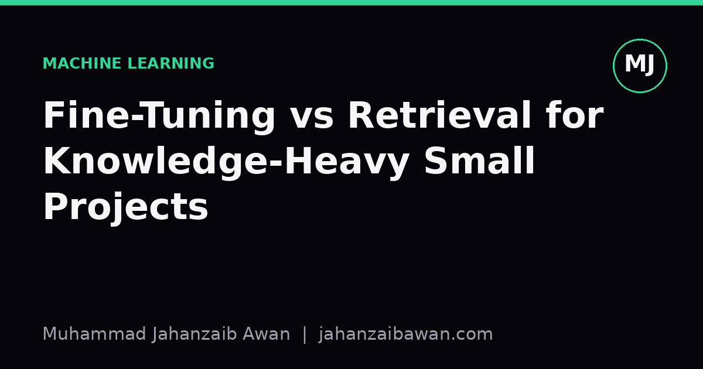

Fine-Tuning vs Retrieval for Knowledge-Heavy Small Projects
When your project needs facts more than fluency, the choice between baking knowledge into weights and fetching it at query time changes everything about cost, maintenance and trust.

Why this decision matters more than it looks
Every time I start a small project that needs a model to answer questions about a specific domain, a policy document, a product catalogue, a research niche, I face the same fork in the road. Do I fine-tune a model on my domain data, or do I leave the model alone and give it a retrieval system that fetches relevant passages at query time. It sounds like a minor implementation detail, but it actually determines how the whole project behaves: how often it is wrong, how expensive it is to fix mistakes, and how much you can trust its answers six months from now when your source documents have changed.
The temptation with a small project is to reach for fine-tuning because it feels like the more serious, more machine-learning-flavoured option. You imagine training a model until it has internalised your domain, the way a student memorises a textbook. But for knowledge-heavy tasks, that intuition is often wrong, and getting it wrong on a small project is expensive precisely because you have limited data and limited capacity to catch the failure modes it introduces.
The core distinction is this: fine-tuning changes how a model behaves, retrieval changes what a model knows at the moment of answering. Knowledge-heavy tasks, where correctness depends on specific facts, figures, or clauses, are usually retrieval problems wearing a fine-tuning costume. Style-heavy tasks, where you want a particular tone, format, or reasoning pattern, are usually fine-tuning problems. Mixing up which one you have is the single most common mistake I see in small projects.
A worked example: a project with three hundred internal documents
Suppose you are building a system to answer questions from three hundred internal policy documents, each a few pages long, updated a handful of times a year. That is a realistic small-project scale: not enough text to meaningfully shift a large model's internal knowledge through fine-tuning, but plenty of text to overwhelm a context window if you tried to paste it all in.
If you fine-tune a model on question-answer pairs generated from these documents, you face an immediate data problem. Three hundred documents might yield a few thousand synthetic question-answer pairs if you are generous, and many of those pairs will be near-duplicates or will encode facts that only appear once in the whole corpus. A model fine-tuned on this will often learn the phrasing and structure of your answers without reliably learning the facts, because facts that appear once in a few thousand training examples are exactly the kind of thing gradient descent struggles to memorise faithfully. You end up with a model that sounds confident and answers in the right style, but occasionally states an outdated policy number or the wrong department name, because it partially memorised and partially guessed.
Now suppose instead you build a retrieval system: split the three hundred documents into passages, embed them, and at query time fetch the five or ten most relevant passages to place in the model's context before it answers. When a policy changes, you update one document and re-embed it, a job that takes minutes. The model itself never needs retraining. Crucially, when the system gets something wrong, you can usually trace it to a retrieval failure, the wrong passage was fetched, which is diagnosable and fixable, rather than a fine-tuning failure, the fact was learned incorrectly, which is opaque and requires retraining to even attempt a fix.
The retrieval approach also gives you something fine-tuning cannot: provenance. You can show the user which passage the answer came from. For a knowledge-heavy small project, especially one where users need to trust or verify answers, that traceability is often worth more than any gain in fluency that fine-tuning might offer.
Where fine-tuning genuinely earns its place
None of this means fine-tuning is the wrong tool for small projects in general, only that it is the wrong tool for injecting facts. Fine-tuning is well suited to teaching a model a consistent output format, a particular tone for customer replies, a domain-specific way of reasoning through a classification task, or how to use tools and follow instructions reliably within your workflow. These are behavioural patterns that recur across many examples, which is exactly what gradient descent is good at capturing.
A useful test I apply is to ask whether the thing I want the model to learn would still be true if I changed the specific facts but kept the structure. If I want a model to always respond in a three-part format regardless of subject matter, that is a behavioural pattern, fine-tuning is appropriate. If I want the model to know that a particular clause was amended last March, that is a fact, and facts belong in a retrieval index, not in weights.
The two approaches are not mutually exclusive, and combining them is often the strongest option for a knowledge-heavy small project that also needs consistent behaviour. You might fine-tune lightly on a small set of examples to teach the model your preferred answer format and citation style, while relying entirely on retrieval to supply the actual facts at query time. This gives you the maintainability of retrieval with the consistency of fine-tuning, and it keeps the fine-tuning dataset small and behavioural rather than trying to force it to encode a knowledge base it was never designed to hold.
The practical takeaway
Before committing engineering time to a small, knowledge-heavy project, separate the question of what the model must know from the question of how it must behave. If the answer changes when your source documents change, that is knowledge, and it belongs in a retrieval system you can update independently of the model. If the answer would stay structurally the same regardless of which facts are plugged in, that is behaviour, and a small, carefully curated fine-tuning set can help.
Evaluate accordingly too. For a retrieval-based system, spend your limited evaluation budget testing whether the right passages are being fetched, since that is usually where errors originate, rather than only checking the fluency of final answers. For a fine-tuned system, watch specifically for confident-sounding factual errors, since a model that has partially memorised a small dataset will produce exactly that failure mode, and it is the hardest one to catch by casual inspection. Getting this split right early saves you from the classic small-project trap: a model that answers beautifully and is wrong just often enough to erode trust.